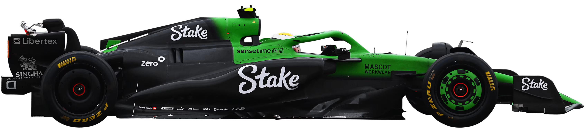
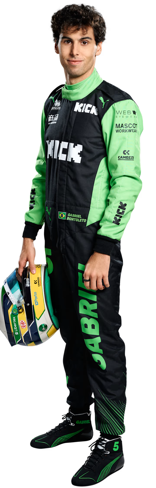
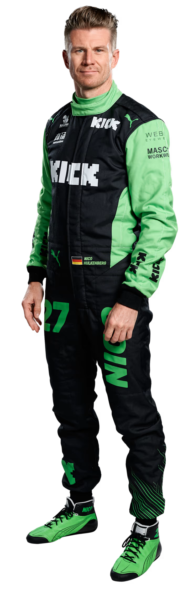

Depois de alcançar um sucesso considerável nas competições de carros desportivos, onde ajudou a desenvolver os talentos emergentes de futuros pilotos de F1 como Michael Schumacher e Heinz-Harald Frentzen, Peter Sauber conduziu a sua equipa homónima à Fórmula 1 em 1993.